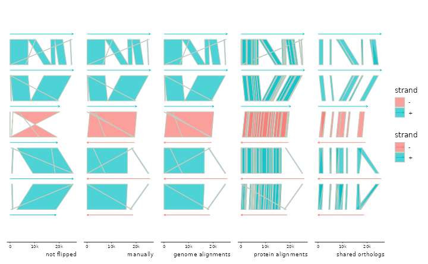
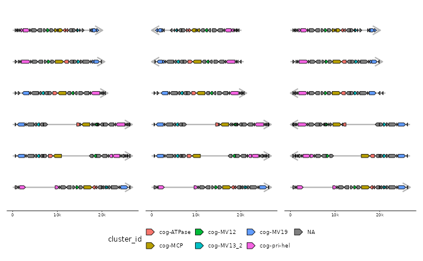

## Loading required package: ggplot2##
## Attaching package: 'gggenomes'## The following object is masked from 'package:graphics':
##
## layout
p <- gggenomes(genes=emale_genes) +
geom_seq(aes(color=strand), arrow=TRUE) +
geom_link(aes(fill=strand)) +
expand_limits(color=c("-")) +
labs(caption="not flipped")## No seqs provided, inferring seqs from feats
# nothing flipped
p0 <- p %>% add_links(emale_ava)
# flip manually
p1 <- p %>% add_links(emale_ava) %>%
flip(4:6) + labs(caption="manually")
# flip automatically based on genome-genome links
p2 <- p %>% add_links(emale_ava) %>%
sync() + labs(caption="genome alignments")## Flipping: E4-10_086,E4-10_112,RCC970_016B
# flip automatically based on protein-protein links
p3 <- p %>% add_sublinks(emale_prot_ava) %>%
sync() + labs(caption="protein alignments")## Transforming sublinks with "aa2nuc". Disable with `.transform = "none"`
## Flipping: E4-10_086,E4-10_112,RCC970_016B
# flip automatically based on genes linked implicitly by belonging
# to the same clusters of orthologs (or any grouping of your choice)
p4 <- p %>% add_clusters(emale_cogs) %>%
sync() + labs(caption="shared orthologs")## Joining with `by = join_by(feat_id)`
## Flipping: E4-10_086,E4-10_112,RCC970_016B
p0 + p1 + p2 + p3 + p4 + plot_layout(nrow=1, guides="collect")
# flip seqs inside bins
s0 <- tibble::tibble(
bin_id = c("A", "B", "B", "B", "C", "C", "C"),
seq_id = c("a1","b1","b2","b3","c1","c2","c3"),
length = c(1e4, 6e3, 2e3, 1e3, 3e3, 3e3, 3e3))
p <- gggenomes(seqs=s0) +
geom_seq(aes(color=bin_id), size=1, arrow = arrow(angle = 30, length = unit(10, "pt"),
ends = "last", type = "open")) +
geom_bin_label() + geom_seq_label() +
expand_limits(color=c("A","B","C"))
p1 <- p %>% flip_seqs(6)
p2 <- p %>% flip_seqs(c2)
p3 <- p %>% flip_seqs(2, .bins = C)
p + p1 + p2 + p3 + plot_layout(nrow=1, guides="collect")
# fancy flipping using tidyselect::where for dynamic selection
p <- gggenomes(emale_genes,emale_seqs) %>% add_clusters(emale_cogs) +
geom_seq(color="grey70", size=1, arrow = arrow(angle = 30, length = unit(15, "pt"),
ends = "last", type = "open")) +
geom_gene(aes(fill=cluster_id))## Joining with `by = join_by(feat_id)`
# flip all short seqs - where() applied to .bin_track=seqs
p1 <- p %>% flip(where(~.x$length < 21000))
# flip all seqs with MCP on "-" - where() applied to .bin_track=genes
p2 <- p %>% flip(where(~any(.x$strand[.x$cluster_id %in% "cog-MCP"] == "-")), .bin_track=genes)
p + p1 + p2 + plot_layout(nrow=1, guides="collect") & theme(legend.position = "bottom")